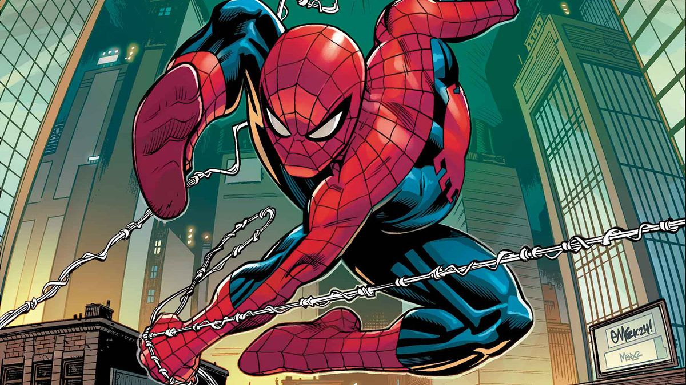

As an extrovert, I thrive in social interactions within my academic environment, which enhances my participation in class discussions and group projects. My outgoing nature encourages collaboration and helps foster positive dynamics among peers, allowing me to take on leadership roles and effectively communicate ideas. Additionally, I actively network with teachers and mentors, which opens doors for academic support and collaboration. My hobby of reading various media—such as comics, manga, manhua, myths, and novels—further enriches my school life by broadening my perspectives and enhancing my critical thinking. Analyzing diverse narratives sharpens my analytical skills, while exposure to different cultures informs my contributions in discussions and assignments. Regular reading also improves my vocabulary, enabling me to articulate thoughts more clearly in both writing and presentations. Ultimately, the synergy between my extraversion and my passion for reading not only fosters strong social connections but also fuels my creativity and academic success, making learning a more enjoyable and enriching experience.


My hero is Spider-Man a.k.a Peter Parker , a fictional superhero created by Stan Lee and Steve Ditko for Marvel Comics. What sets Spider-Man apart for me is his relatability. Unlike many other superheroes, Peter faces everyday struggles like balancing school, work, and personal relationships while bearing the immense responsibility of being a superhero .He's a hero I admire because, beneath the mask, he is just a regular person trying to do the right thing. He deals with self-doubt, loss, and failure but never lets those challenges stop him from helping others. His resilience, humility, and strong moral compass inspire me to tackle my own obstacles and remind me that no matter the difficulties, staying true to your values is what matters most.
"With Great Power, Comes Great Responsibility"
This quote, spoken by Peter Parker's Uncle Ben, is Spider-Man's guiding principle. It reflects the moral weight of power and the obligation to use it for the greater good. It's a powerful reminder that the abilities or opportunities we have in life should be used responsibly to help others.
I took the 16 Personalities and received the following results:

I believe this test has validity because the ENTP traits resonate with my personality. As a Debater, I often exhibit boldness and creativity, deconstructing and rebuilding ideas while pursuing my goals vigorously, even in the face of challenges. I enjoy spirited debates and challenging the status quo, using my quick wit and curiosity to engage in discussions. This aligns with my playful sense of humor and desire for intellectual growth. Thus, I find the ENTP assessment accurately reflects my tendencies and strengths.